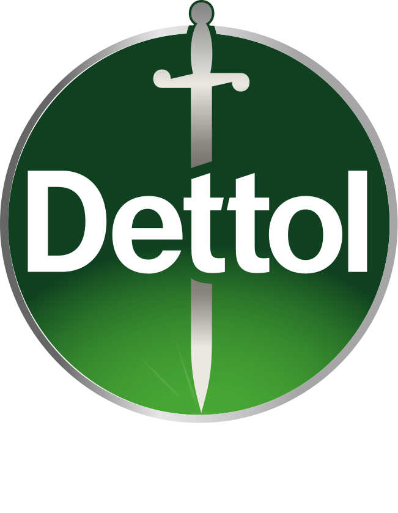
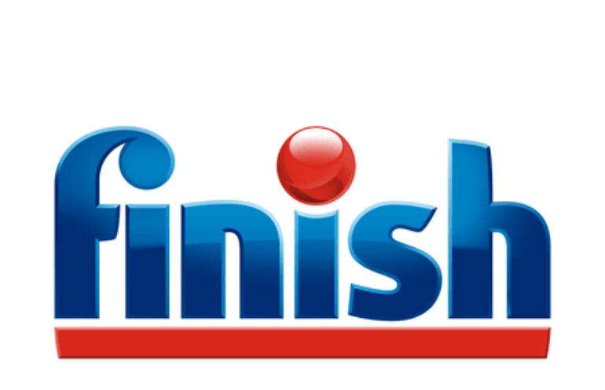

Buyer
The head of content production at a CPG brand, one level below the CMO. Often reached through its independent studio.
Champion: content lead or designer.01 / 10Sharp Start
Land through agencies and studios.
Expand into the CPG brands they serve.
The head of content production at a CPG brand, one level below the CMO. Often reached through its independent studio.
Champion: content lead or designer.Isolated tools. Higgsfield brings the production pipeline together, with the right model at each stage.
Quality, speed and low cost.Our users and ambassadors already work inside the enterprise accounts we want to win.
Validate account by account.02 / 10The market
#1 in US digital video spend in 2026 — about twice retail.
Consumer touchpoints in a decade. Each needs its own content.
CPG marketers with GenAI in their workflows. Adoption still has room to grow.
Make the approved asset travel further.
In days, across channels and markets.
03 / 10The first deal
Regional Marketing Director
Reckitt Middle East · Dubai
Reckitt’s job ad names Higgsfield first. The team is building an in-house AI content engine for Dettol and Finish.


Then expand: Teresa Fusaro
Senior Director Gen AI Creativity, Global
The studio already makes AI ad films for Dettol and Finish.
“Your AI Content & Workflow ad lists Higgsfield first.”
Subject: Your Dubai content engine, built in Higgsfield
Hi Haseeb,
Your AI Content & Workflow ad lists Higgsfield first. Reading it, it describes Higgsfield Enterprise almost line by line:
- Workflow where tools are nodes → Canvas and an agent that route each step to the right one of 50+ models; new models land at launch.
- Brand rules, character and pack references → Character Studio and shared brand assets in one workspace, with approvals.
- One asset → hundreds of variants → batch and API generation, reframes for every platform, Arabic dubbing with lip-sync.
- One framework across brands and markets → a sub-workspace per brand and market, one credit pool.
- Playbooks for the next market → a Forward Deployed Creative and an AI Educator on your team.
Could we meet for an hour? We'll go through your brief in detail and demonstrate pipeline for you in Higgsfield.
Vladimir Enterprise, Higgsfield
Hi Haseeb — exciting to see your deep interest in tech; same here! Your AI content engine for Dettol and Finish proves it. We recently launched Higgsfield Enterprise, and most of that pipeline already lives in it. Coffee in Dubai next week? I'd value your view, and I'm happy to share our insights.
04 / 10Product POV
Swap the model, keep the vendor.
MCP and CLI, plus creative-app plugins.
1,500+ ad templates and 250+ VFX presets.
The buyer needs a clear first step.
No published CPG business-metric proof in the reviewed offer.
A brand cannot train a model on its own asset library.
Fix first: one guided customer job.
05 / 10Model landscape & proof
| Seedance 2.5 | Wan 3.0 | MiniMax H3 | Veo 3.1 | Kling 3.0 | |
|---|---|---|---|---|---|
| Visual quality | 5 | 5 | 5 | 1 | 2 |
| Motion & physics | 5 | 5 | 5 | 1 | 2 |
| Character consistency | 5 | 5 | 5 | 1 | 1 |
| Controllability | 4 | 5 | 4 | 1 | 2 |
| Speed | 2 | n/a | 3 | 5 | 1 |
| Price | 1 | 3 | 5 | 2 (Fast: 4) | 3 |
| Sell it for | Multi-SKU / UGC | Variants / localisation | Previz / animatics | Legal-reviewed hero work | Product video at volume |
My comparative assessment from cited benchmarks · 6 Oct 2026.
Speed includes one vendor-run test. The matrix’s Kling 3.0 differs from the tested O3 Pro.
Everysight → outdoor padel · same prompt and starting frame.
Correct remaining brand details before delivery.
Client & brief. Everysight: adapt its sports ad to outdoor padel in 8 seconds. Keep the athlete, glasses and branding consistent; make the strike and ball flight believable.
Test. Same prompt and starting frame across four models; Seedance 2.5 and Veo 3.1 ran through Higgsfield, Gen-4.5 and Kling O3 Pro through Runway. One output each; Kling generated 10 seconds, trimmed to 8.
Higgsfield · 8 s · 1280 × 720
best overall. Most convincing action; branding mostly held in the reviewed frames, with minor logo artifacts.
Runway · 8 s · 1280 × 720
broken ball trajectory and racket interaction; branding is hard to read.
Runway · 8 s · 1280 × 720
closer on movement and ball flight, but contact remains unclear and the glasses wordmark is misspelled.
Higgsfield · 8 s · 1280 × 720
broken strike mechanics and ball flight; branding is barely visible.
Select exactly two cards to compare. Hover to preview one clip.
My pick for this brief: Seedance 2.5. Use it as the production base, then correct the remaining brand details before client delivery. For another client, the pick starts from the brief — what matters most decides the model.
One run per model · comparison exports 720p · 8 seconds. Seedance cost 56 credits; Veo 80. The tested Kling is O3 Pro; the matrix covers Kling 3.0. Veo used the Higgsfield preview mode.
The enterprise value: model continuity, one cost window and pooled volume behind one contract.
Google documents indemnity for GA models in the listed Google Cloud services. Coverage through an aggregator is contract-specific.
Availability: MiniMax H3 is API-only on Higgsfield; its open-weight licence restricts use in the US, EU, UK and South Korea. The reviewed BytePlus Seedance offer excludes the US.
06 / 10The buyer’s math
Illustrative production budget · one 30-second paid-social brief · 3 variants × 3 formats
| Traditional | AI-native | |
|---|---|---|
| Pre-production | $1,000 | $600 |
| Shoot: director, crew, gear, location | $5,000 | — |
| Generation | — | $533 |
| Directing → prompt iteration | in the shoot | $1,200 |
| Actors and voice | $1,000 | $450 |
| Post: edit, color, sound, cleanup | $1,500 | $700 |
| Music and formats | $500 | $320 |
| Total | ≈ $9,000 ($8–10K) | $3,803 |
| Time | 4 weeks | 6 days |
This is a worked budget, not a measured $3,803 production run. Resolution and the number of attempts are the biggest generation-cost drivers.
07 / 10The competitive edge
 AT THE BRAND · EXPAND
AT THE BRAND · EXPANDThe test for us: transparent prices do not settle failed-generation charges. Those terms need an explicit answer.
08 / 10The commercial test
Proposed agency package · 12-month contract, billed monthly
All models. Unlimited on Higgsfield’s own models.
Higgsfield’s own and open-source models.
View. Comment. Approve.
15 Creators + 10 Contributors + a 300k credit pack
/ year · billed monthly
Assumption from the proposal: ~340k credits a month ≈ 50 new 30-second ads, ~170 versions and 10,000 images. Versions here are lighter adaptations, not 170 additional full productions.
Why this shape: CEO-reported gross margins are over 80% on own/open models and 20–30% on rented frontier models. The package steers routine work toward the former.
09 / 10Delivery & objections
Pay for usage. New models arrive without infrastructure work for your team.
Trade-off: shared queues and vendor limits.Reserve throughput when utilisation justifies the commitment.
Trade-off: you also pay for idle capacity.Control the deployment and its data boundary.
Trade-off: a narrower model catalogue and the heaviest operations burden.Price the hardware, utilisation and operating team. Veo, Seedance and Kling cannot be self-hosted.
Fix rates for the year and review them together annually. Model cost and output per dollar also change.
10 / 10The hiring signal
108 creative job ads · 50 CPG brands + 20 agency networks · checked up to 6 Oct 2026
| Employers naming the tool | Adobe Firefly | Runway | Higgsfield |
|---|---|---|---|
| 50 CPG brands | 14 (28%) | 8 (16%) | 1 (2%) — Reckitt |
| 20 agency networks | 15 (75%) | 16 (80%) | 8 (40%) |
Hiring demand, not verified usage or market share. “Not found” does not mean “not used.”
8 / 20 agency networksYour job ads ask for Higgsfield. Let’s make it a standard, not a personal card.
Firefly at 14 / 50 brandsYour team lives in Premiere.
Show the expanded model workflow inside their existing tools.
Runway in all 8 Higgsfield networksYour job ads name both tools.
One live brief. The same reviewers. Cost per approved asset.
Find the creator. Validate the workflow.
Win the first live brief.
Fixed sample, not a revenue top-50. An employer counts once it has at least one verified ad naming the tool. 67 of 108 ads have no confirmed publication date.
Expert check: one conversation with Sergey — 25+ years in marketing, with senior roles at SAP, Nestlé, Danone and Evyap — changed six choices. These are hypotheses to test, not independent proof.
| What he told me | What I changed |
|---|---|
| Enterprise adoption is not sold top-down. | Land through an existing creator. |
| The CMO is far from content production. | Target the buyer one level below. |
| Agencies handle adaptation work. | Land through the independent studio. |
| 1–2 people can adapt content for 150 markets. | Price producers, not the whole company. |
| Speed and the brand book matter. | Lead with speed and brand consistency. |
| The team can build its own workflow. | Treat DIY as a competitor. |